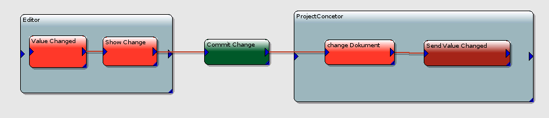

An Editor represent illustration of the document it hase been added The Dokument itself contains Nodes and Connections. At the Moment all Nodes and Connections should BMessages. The Editor profide a way to change the the Nodes and/or Connection. To profide a easy an fast way for the User its recommended that the Editor make, and show all changes, and after the user have finished one action the change is commited to the ProjectConceptor. 
Another thing is that ProjectConceptro works with TabView. This means that Your Editor can be activ and inactiv If your Editor is set activ it shoud add all the Stuff he need´s to the MenuBar, ToolBar and StatusBar. You are also able to add as much :-) ToolBars as you woud. But you also have to take care that you remove all your stuff if your Editor becomes inactiv. The best Method to do this Stuff is theAttachedToWindow(void) Method wich is called, if you Editor is the one wich belongs to the
currently activated tab. Here you shoud add all the Stuff you need to the ProjectConceptorWindow your are added
In DetachedFromWindow(void) you shoud remove all of you added Menus,ToolItems and so on, because your Editor is no longer activ